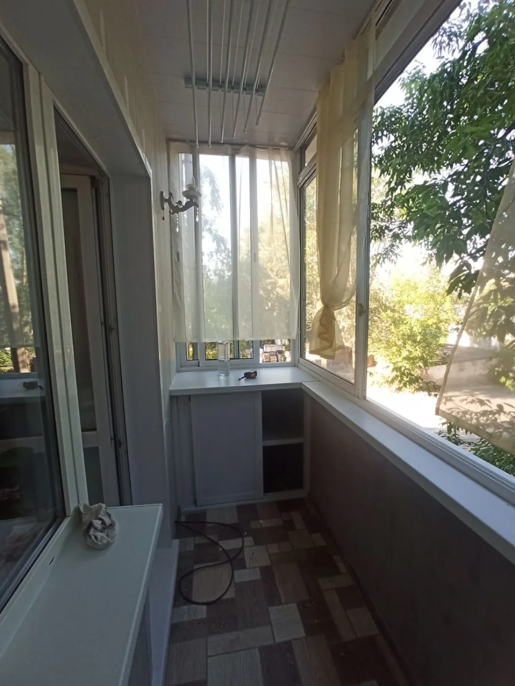
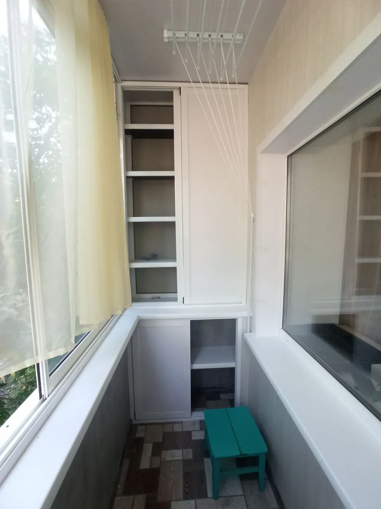

🪟
Ремонт и регулировка окон
Устранение продувания, регулировка створок, обслуживание и ремонт фурнитуры. От 500 ₽.
Подробнее об услуге →Дует из окна или не закрывается створка? Поможем решить проблему. Ремонт и обслуживание окон ПВХ, изготовление и монтаж окон, остекление балконов и алюминиевых конструкций с выездом мастера.
От небольшого ремонта до изготовления и установки конструкций.
Устранение продувания, регулировка створок, обслуживание и ремонт фурнитуры. От 500 ₽.
Подробнее об услуге →Изготовление и установка пластиковых окон по размерам объекта.
Подробнее об услуге →Тёплое и холодное остекление, отделка балконов и лоджий.
Подробнее об услуге →Остекление и монтаж алюминиевых конструкций, в том числе входных групп.
Подробнее об услуге →Панорамное и нестандартное остекление загородных объектов.
Подробнее об услуге →Ремонт и регулировка пластиковых окон в Красноярске от 500 ₽. Устраняем проблемы с прижимом створки, фурнитурой и уплотнителями. Причину и окончательную стоимость согласуем после осмотра.
Позвоните или опишите проблему с окном в сообщении. Можно приложить фотографии.
Обсудим конструкцию, объём работ и дальнейшие действия.
Согласуем условия и организуем выполнение заказа.
13 реальных фотографий окон, балконов, веранд и нестандартных конструкций. Нажмите на фото, чтобы увеличить.






Фотографии предоставлены «ПроОкна24». Для расчёта похожего проекта свяжитесь с нами.
Избранные реальные отзывы за 2021–2025 годы. Тексты приведены по скриншотам Авито; оценка показана только там, где она указана. Доступен и отзыв без оценки, по обращению, которое не закончилось заказом.
Ремонт окон в холодное время
Были проблемы с окнами в холодное время, Александр всё исправил быстро и качественно и по приемлемой цене. Рекомендуем как хорошего специалиста своего дела!)Открыть отзывы на Авито ↗
Ремонт балконной двери
Обращался к Александру по ремонту балконной двери. Все подробно показал, рассказал, лишнего ни чего не накручивал. Сделал все очень качественно и быстро! 💪 Отличный специалист, рекомендую!!! 👍🙂Открыть отзывы на Авито ↗
Монтаж окон
Работа выполнена Александром качественно и в кратчайший срок (2 дня) с полным знанием своего дела! Цена не завышена. Рекомендуем этого мастера!!Открыть отзывы на Авито ↗
Монтаж окон
Делает всё качественно и аккуратно. После монтажа - проверил всё по лазерному уровню. Цена монтажа - адекватная, без лишних накруток. Всё честно и кристально чисто.Открыть отзывы на Авито ↗
Установка окон
Отличный мастер и собеседник. Всё сделал как договаривались. За адекватную цену. Рекомендую 🤝Открыть отзывы на Авито ↗
Монтаж окон и конструкций
Отличный мастер, приятный человек. Все сделал быстро и качественно. Работой полностью доволен. Александр профессионал своего дела,и я очень рад, что обратился именно к нему. Рекомендую👍Открыть отзывы на Авито ↗
Изготовление и установка
Всё отлично👍 изделия изготовлены вовремя, установка выполнена качественноОткрыть отзывы на Авито ↗
Окна и конструкции
Быстро и профессионально, спасибоОткрыть отзывы на Авито ↗
Окна и конструкции
приехал, объяснил и сделал все хорошо, данным мастером полностью довольныОткрыть отзывы на Авито ↗
Обращение без заказа
Александр, мастер своего дела, вежливый и тактичный, всё чётко и честно объясняет, он единственный человек (из тех, к кому обращалась), который предупредил о том, что на мой балкон такую конструкцию ни в коем случае нельзя устанавливать. За это ему большое спасибо!Открыть отзывы на Авито ↗
Если друзьям или близким понадобится ремонт окон, остекление балкона или монтаж конструкций, отправьте им наши контакты. На сайте есть фотографии работ и отзывы клиентов.
Заполните форму — откроется почтовое приложение с готовым письмом. Отправка происходит после вашего подтверждения.
Телефон
+7 923 335-24-54
Почта
Krasnoyarsk-retail@yandex.ru
Сообщества
ВКонтакте · MAX · Telegram
Город
Красноярск